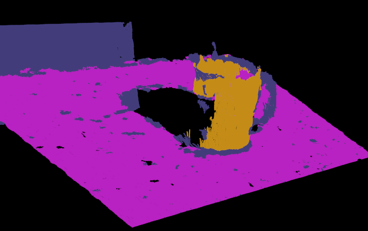
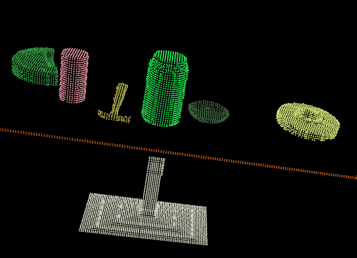

点云分割 *¶
点云分割是根据空间、几何和纹理等特征对点云进行划分，使得同一划分区域内的点云拥有相似的特征 。 点云的有效分割往往是许多应用的前提。例如，在逆向工程CAD/CAM 领域，对零件的不同扫描表面进行分割，然后才能更好地进行孔洞修复、曲面重建、特征描述和提取，进而进行基于 3D内容的检索、组合重用等。在激光遥感领域，同样需要对地面、物体首先进行分类处理，然后才能进行后期地物的识别、重建 。
总之，分割采用分而治之的思想，在点云处理中和滤波一样属于重要的基础操作，在PCL 中目前实现了进行分割的基础架构，为后期更多的扩展奠定了基础，现有实现的分割算法是鲁棒性比较好的Cluster聚类分割和RANSAC基于随机采样一致性的分割。
PCL分割库包含多种算法，这些算法用于将点云分割为不同簇。适合处理由多个隔离区域空间组成的点云。将点云分解成其组成部分，然后可以对其进行独立处理。 可以在集群提取教程中找到理论入门，以解释集群方法的工作原理。这两个图说明了平面模型分割（上）和圆柱模型分割（下）的结果。


平面模型分割¶
代码实现¶
文件名planar_segmentation.cpp
#include <iostream>
#include <pcl/ModelCoefficients.h>
#include <pcl/io/pcd_io.h>
#include <pcl/point_types.h>
#include <pcl/sample_consensus/method_types.h>
#include <pcl/sample_consensus/model_types.h>
#include <pcl/segmentation/sac_segmentation.h>
int
main(int argc, char **argv) {
pcl::PointCloud<pcl::PointXYZ>::Ptr cloud(new pcl::PointCloud<pcl::PointXYZ>);
/***
* 生成15个无序点云，x,y为随机数，z为1.0
* 将points中0、3、6索引位置的z值进行修改，将之作为离群值
*/
// Fill in the cloud data
cloud->width = 15;
cloud->height = 1;
cloud->points.resize(cloud->width * cloud->height);
// Generate the data
for (std::size_t i = 0; i < cloud->points.size(); ++i) {
cloud->points[i].x = 1024 * rand() / (RAND_MAX + 1.0f);
cloud->points[i].y = 1024 * rand() / (RAND_MAX + 1.0f);
cloud->points[i].z = 1.0;
}
// Set a few outliers
cloud->points[0].z = 2.0;
cloud->points[3].z = -2.0;
cloud->points[6].z = 4.0;
std::cerr << "Point cloud data: " << cloud->points.size() << " points" << std::endl;
for (std::size_t i = 0; i < cloud->points.size(); ++i)
std::cerr << " " << cloud->points[i].x << " "
<< cloud->points[i].y << " "
<< cloud->points[i].z << std::endl;
/**
* 创建分割时所需要的模型系数对象 coefficients 及存储内点的点索引集合对象 inliers .
* 这也是我们指定“阈值距离DistanceThreshold”的地方，该距离阈值确定点必须与模型有多远才能被视为离群点。
* 这里距离阔值是 0.01m ,即只要点到 z=1 平面距离小于该阈值的点都作为内部点看待,而大于该阁值的则看做离群点。
* 我们将使用RANSAC方法（`pcl::SAC_RANSAC`）作为可靠的估计器。因为RANSAC比较简单（其他强大的估算工具也以此为基础，并添加了其他更复杂的概念）。
*/
pcl::ModelCoefficients::Ptr coefficients(new pcl::ModelCoefficients);
pcl::PointIndices::Ptr inliers(new pcl::PointIndices);
// Create the segmentation object
pcl::SACSegmentation<pcl::PointXYZ> seg;
// 可选配置：是否优化模型系数
seg.setOptimizeCoefficients(true);
// 必选配置：设置分割的模型类型、分割算法、距离阈值、输入点云
seg.setModelType(pcl::SACMODEL_PLANE);
seg.setMethodType(pcl::SAC_RANSAC);
seg.setDistanceThreshold(0.01);
seg.setInputCloud(cloud);
// 执行分割操作，并存储分割结果保存到点集合 inliers 及存储平面模型系数 coefficients
seg.segment(*inliers, *coefficients);
if (inliers->indices.size() == 0) {
PCL_ERROR ("Could not estimate a planar model for the given dataset.");
return (-1);
}
// 此段代码用来打印出估算的平面模型的参数（以 ax+by+ca+d=0 形式）,详见RANSAC采样一致性算法的SACMODEL_PLANE平面模型
std::cerr << "Model coefficients: " << coefficients->values[0] << " "
<< coefficients->values[1] << " "
<< coefficients->values[2] << " "
<< coefficients->values[3] << std::endl;
std::cerr << "Model inliers: " << inliers->indices.size() << std::endl;
for (std::size_t i = 0; i < inliers->indices.size(); ++i)
std::cerr << inliers->indices[i] << " " << cloud->points[inliers->indices[i]].x << " "
<< cloud->points[inliers->indices[i]].y << " "
<< cloud->points[inliers->indices[i]].z << std::endl;
return (0);
}
输出结果¶
/home/ty/Lesson/PCL/Code/PCLDemo/build/Debug/bin/planar_segmentation
Point cloud data: 15 points
0.352222 -0.151883 2
-0.106395 -0.397406 1
-0.473106 0.292602 1
-0.731898 0.667105 -2
0.441304 -0.734766 1
0.854581 -0.0361733 1
-0.4607 -0.277468 4
-0.916762 0.183749 1
0.968809 0.512055 1
-0.998983 -0.463871 1
0.691785 0.716053 1
0.525135 -0.523004 1
0.439387 0.56706 1
0.905417 -0.579787 1
0.898706 -0.504929 1
Model coefficients: 0 0 1 -1
Model inliers: 12
1 -0.106395 -0.397406 1
2 -0.473106 0.292602 1
4 0.441304 -0.734766 1
5 0.854581 -0.0361733 1
7 -0.916762 0.183749 1
8 0.968809 0.512055 1
9 -0.998983 -0.463871 1
10 0.691785 0.716053 1
11 0.525135 -0.523004 1
12 0.439387 0.56706 1
13 0.905417 -0.579787 1
14 0.898706 -0.504929 1
实现效果¶
坐标轴表示为红色（x），绿色（y）和蓝色（z）。这些点以红色表示为离群值，绿色表示为平面模型内的内部值。

圆柱体模型分割¶
本节举例说明了如何采用随机采样一致性估计从带有噪声的点云中提取一个圆柱体模型，整个程序处理流程如下 :
- 过滤掉远于 1. 5 m 的数据点
- 估计每个点的表面法线
- 分割出平面模型 （数据集中的桌面）并保存到磁盘中。
- 分割圆出柱体模型（数据集中的杯子）并保存到磁盘中。
注意：由于数据中包含噪声，圆柱体模型并不十分严格 。
代码实现¶
#include <pcl/ModelCoefficients.h>
#include <pcl/io/pcd_io.h>
#include <pcl/point_types.h>
#include <pcl/filters/extract_indices.h>
#include <pcl/filters/passthrough.h>
#include <pcl/features/normal_3d.h>
#include <pcl/sample_consensus/method_types.h>
#include <pcl/sample_consensus/model_types.h>
#include <pcl/segmentation/sac_segmentation.h>
typedef pcl::PointXYZ PointT;
int
main(int argc, char **argv) {
// All the objects needed
pcl::PCDReader reader; // PCD文件读取对象
pcl::PassThrough<PointT> pass; // 直通滤波器
pcl::NormalEstimation<PointT, pcl::Normal> ne; // 法线估算对象
pcl::SACSegmentationFromNormals<PointT, pcl::Normal> seg; // 分割器
pcl::PCDWriter writer; // PCD文件写出对象
pcl::ExtractIndices<PointT> extract; // 点提取对象
pcl::ExtractIndices<pcl::Normal> extract_normals; // 法线提取对象
pcl::search::KdTree<PointT>::Ptr tree(new pcl::search::KdTree<PointT>());
// Datasets
pcl::PointCloud<PointT>::Ptr cloud(new pcl::PointCloud<PointT>);
pcl::PointCloud<PointT>::Ptr cloud_filtered(new pcl::PointCloud<PointT>);
pcl::PointCloud<pcl::Normal>::Ptr cloud_normals(new pcl::PointCloud<pcl::Normal>);
pcl::PointCloud<PointT>::Ptr cloud_filtered2(new pcl::PointCloud<PointT>);
pcl::PointCloud<pcl::Normal>::Ptr cloud_normals2(new pcl::PointCloud<pcl::Normal>);
pcl::ModelCoefficients::Ptr coefficients_plane(new pcl::ModelCoefficients), coefficients_cylinder(
new pcl::ModelCoefficients);
pcl::PointIndices::Ptr inliers_plane(new pcl::PointIndices), inliers_cylinder(new pcl::PointIndices);
// Read in the cloud data 读取点云数据
reader.read("./data/table_scene_mug_stereo_textured.pcd", *cloud);
std::cerr << "PointCloud has: " << cloud->points.size() << " data points." << std::endl;
// Build a passthrough filter to remove spurious NaNs
pass.setInputCloud(cloud);
pass.setFilterFieldName("z");
pass.setFilterLimits(0, 1.5);
pass.filter(*cloud_filtered);
std::cerr << "PointCloud after filtering has: " << cloud_filtered->points.size() << " data points." << std::endl;
// Estimate point normals
ne.setSearchMethod(tree);
ne.setInputCloud(cloud_filtered);
ne.setKSearch(50);
ne.compute(*cloud_normals);
// Create the segmentation object for the planar model and set all the parameters
seg.setOptimizeCoefficients(true);
seg.setModelType(pcl::SACMODEL_NORMAL_PLANE);
seg.setNormalDistanceWeight(0.1);
seg.setMethodType(pcl::SAC_RANSAC);
seg.setMaxIterations(100);
seg.setDistanceThreshold(0.03);
seg.setInputCloud(cloud_filtered);
seg.setInputNormals(cloud_normals);
// Obtain the plane inliers and coefficients
seg.segment(*inliers_plane, *coefficients_plane);
std::cerr << "Plane coefficients: " << *coefficients_plane << std::endl;
// Extract the planar inliers from the input cloud
extract.setInputCloud(cloud_filtered);
extract.setIndices(inliers_plane);
extract.setNegative(false);
// Write the planar inliers to disk
pcl::PointCloud<PointT>::Ptr cloud_plane(new pcl::PointCloud<PointT>());
extract.filter(*cloud_plane);
std::cerr << "PointCloud representing the planar component: " << cloud_plane->points.size() << " data points."
<< std::endl;
writer.write("table_scene_mug_stereo_textured_plane.pcd", *cloud_plane, false);
// Remove the planar inliers, extract the rest
extract.setNegative(true);
extract.filter(*cloud_filtered2);
extract_normals.setNegative(true);
extract_normals.setInputCloud(cloud_normals);
extract_normals.setIndices(inliers_plane);
extract_normals.filter(*cloud_normals2);
// Create the segmentation object for cylinder segmentation and set all the parameters
// 设置圆柱体分割对象参数
seg.setOptimizeCoefficients(true);
seg.setModelType(pcl::SACMODEL_CYLINDER); // 设置分割模型为圆柱体
seg.setMethodType(pcl::SAC_RANSAC); // 设置采用RANSAC算法进行参数估计
seg.setNormalDistanceWeight(0.1); // 设置表面法线权重系数
seg.setMaxIterations(10000); // 设置最大迭代次数10000
seg.setDistanceThreshold(0.05); // 设置内点到模型的最大距离 0.05m
seg.setRadiusLimits(0, 0.1); // 设置圆柱体的半径范围0 -> 0.1m
seg.setInputCloud(cloud_filtered2);
seg.setInputNormals(cloud_normals2);
// Obtain the cylinder inliers and coefficients
seg.segment(*inliers_cylinder, *coefficients_cylinder);
std::cerr << "Cylinder coefficients: " << *coefficients_cylinder << std::endl;
// Write the cylinder inliers to disk
extract.setInputCloud(cloud_filtered2);
extract.setIndices(inliers_cylinder);
extract.setNegative(false);
pcl::PointCloud<PointT>::Ptr cloud_cylinder(new pcl::PointCloud<PointT>());
extract.filter(*cloud_cylinder);
if (cloud_cylinder->points.empty())
std::cerr << "Can't find the cylindrical component." << std::endl;
else {
std::cerr << "PointCloud representing the cylindrical component: " << cloud_cylinder->points.size()
<< " data points." << std::endl;
writer.write("table_scene_mug_stereo_textured_cylinder.pcd", *cloud_cylinder, false);
}
return (0);
}
输出结果¶
/home/ty/Lesson/PCL/Code/PCLDemo/build/Debug/bin/cylinder_segmentation
PointCloud has: 307200 data points.
PointCloud after filtering has: 139897 data points.
Plane coefficients: header:
seq: 0 stamp: 0 frame_id:
values[]
values[0]: 0.0161879
values[1]: -0.837661
values[2]: -0.54595
values[3]: 0.528869
PointCloud representing the planar component: 116388 data points.
Cylinder coefficients: header:
seq: 0 stamp: 0 frame_id:
values[]
values[0]: 0.0543093
values[1]: 0.0913138
values[2]: 0.781736
values[3]: -0.0182814
values[4]: 0.834237
values[5]: 0.551104
values[6]: 0.0387101
PointCloud representing the cylindrical component: 11474 data points.
此时以下两个文件已保存到当前目录：
table_scene_mug_stereo_textured_plane.pcd
table_scene_mug_stereo_textured_cylinder.pcd
实现效果¶
执行此命令，将三个点云在一个窗口内显示：
pcl_viewer ./data/table_scene_mug_stereo_textured.pcd table_scene_mug_stereo_textured_plane.pcd table_scene_mug_stereo_textured_cylinder.pcd

欧式聚类提取¶
代码实现¶
创建文件：cluster_extraction.cpp
准备资源：./data/tabletop.pcd
#include <pcl/ModelCoefficients.h>
#include <pcl/point_types.h>
#include <pcl/io/pcd_io.h>
#include <pcl/filters/extract_indices.h>
#include <pcl/filters/voxel_grid.h>
#include <pcl/features/normal_3d.h>
#include <pcl/kdtree/kdtree.h>
#include <pcl/sample_consensus/method_types.h>
#include <pcl/sample_consensus/model_types.h>
#include <pcl/segmentation/sac_segmentation.h>
#include <pcl/segmentation/extract_clusters.h>
#include <pcl/visualization/pcl_visualizer.h>
int
main(int argc, char **argv) {
// Read in the cloud data
pcl::PCDReader reader;
pcl::PointCloud<pcl::PointXYZ>::Ptr cloud(new pcl::PointCloud<pcl::PointXYZ>), cloud_f(
new pcl::PointCloud<pcl::PointXYZ>);
reader.read("./data/tabletop.pcd", *cloud);
std::cout << "PointCloud before filtering has: " << cloud->points.size() << " data points." << std::endl; //*
// Create the filtering object: downsample the dataset using a leaf size of 1cm
// 执行降采样滤波，叶子大小1cm
pcl::VoxelGrid<pcl::PointXYZ> vg;
pcl::PointCloud<pcl::PointXYZ>::Ptr cloud_filtered(new pcl::PointCloud<pcl::PointXYZ>);
vg.setInputCloud(cloud);
vg.setLeafSize(0.01f, 0.01f, 0.01f);
vg.filter(*cloud_filtered);
std::cout << "PointCloud after filtering has: " << cloud_filtered->points.size() << " data points."
<< std::endl; //*
// Create the segmentation object for the planar model and set all the parameters
// 创建平面模型分割器并初始化参数
pcl::SACSegmentation<pcl::PointXYZ> seg;
pcl::PointIndices::Ptr inliers(new pcl::PointIndices);
pcl::ModelCoefficients::Ptr coefficients(new pcl::ModelCoefficients);
pcl::PointCloud<pcl::PointXYZ>::Ptr cloud_plane(new pcl::PointCloud<pcl::PointXYZ>());
pcl::PCDWriter writer;
seg.setOptimizeCoefficients(true);
seg.setModelType(pcl::SACMODEL_PLANE);
seg.setMethodType(pcl::SAC_RANSAC);
seg.setMaxIterations(100);
seg.setDistanceThreshold(0.02);
int i = 0, nr_points = (int) cloud_filtered->points.size();
while (cloud_filtered->points.size() > 0.3 * nr_points) {
// Segment the largest planar component from the remaining cloud
// 移除剩余点云中最大的平面
seg.setInputCloud(cloud_filtered);
// 执行分割，将分割出来的平面点云索引保存到inliers中
seg.segment(*inliers, *coefficients);
if (inliers->indices.size() == 0) {
std::cout << "Could not estimate a planar model for the given dataset." << std::endl;
break;
}
// Extract the planar inliers from the input cloud
// 从输入点云中取出平面内点
pcl::ExtractIndices<pcl::PointXYZ> extract;
extract.setInputCloud(cloud_filtered);
extract.setIndices(inliers);
extract.setNegative(false);
// Get the points associated with the planar surface
// 得到与平面相关的点cloud_plane
extract.filter(*cloud_plane);
std::cout << "PointCloud representing the planar component: " << cloud_plane->points.size() << " data points."
<< std::endl;
// Remove the planar inliers, extract the rest
// 从点云中剔除这些平面内点，提取出剩下的点保存到cloud_f中，并重新赋值给cloud_filtered。
extract.setNegative(true);
extract.filter(*cloud_f);
*cloud_filtered = *cloud_f;
}
// Creating the KdTree object for the search method of the extraction
// 为提取算法的搜索方法创建一个KdTree对象
pcl::search::KdTree<pcl::PointXYZ>::Ptr tree(new pcl::search::KdTree<pcl::PointXYZ>);
tree->setInputCloud(cloud_filtered);
/**
* 在这里，我们创建一个PointIndices的vector，该vector在vector <int>中包含实际的索引信息。
* 每个检测到的簇的索引都保存在这里-请注意，cluster_indices是一个vector，包含多个检测到的簇的PointIndices的实例。
* 因此，cluster_indices[0]包含我们点云中第一个 cluster(簇)的所有索引。
*
* 从点云中提取簇（集群）,并将点云索引保存在 cluster_indices 中。
*/
std::vector<pcl::PointIndices> cluster_indices;
pcl::EuclideanClusterExtraction<pcl::PointXYZ> ec;
ec.setClusterTolerance(0.02); // 设置临近搜索的搜索半径（搜索容差）为2cm
ec.setMinClusterSize(100); // 每个簇（集群）的最小大小
ec.setMaxClusterSize(25000); // 每个簇（集群）的最大大小
ec.setSearchMethod(tree); // 设置点云搜索算法
ec.setInputCloud(cloud_filtered); // 设置输入点云
ec.extract(cluster_indices); // 设置提取到的簇，将每个簇以索引的形式保存到cluster_indices;
pcl::visualization::PCLVisualizer::Ptr viewer(new pcl::visualization::PCLVisualizer("3D Viewer"));
// 为了从点云索引向量中分割出每个簇，必须迭代访问点云索引，
int j = 0;
for (std::vector<pcl::PointIndices>::const_iterator it = cluster_indices.begin();
it != cluster_indices.end(); ++it) {
// 每次创建一个新的点云数据集，并且将所有当前簇的点写入到点云数据集中。
pcl::PointCloud<pcl::PointXYZ>::Ptr cloud_cluster(new pcl::PointCloud<pcl::PointXYZ>);
const std::vector<int> &indices = it->indices;
for (std::vector<int>::const_iterator pit = indices.begin(); pit != indices.end(); ++pit)
cloud_cluster->points.push_back(cloud_filtered->points[*pit]);
cloud_cluster->width = cloud_cluster->points.size();
cloud_cluster->height = 1;
cloud_cluster->is_dense = true;
std::cout << "PointCloud representing the Cluster: " << cloud_cluster->points.size() << " data points."
<< std::endl;
/*
std::stringstream ss;
ss << "cloud_cluster_" << j << ".pcd";
writer.write<pcl::PointXYZ>(ss.str(), *cloud_cluster, false); //
*/
std::stringstream ss;
ss << "cloud_cluster_" << j;
// Generate a random (bright) color
pcl::visualization::PointCloudColorHandlerRandom<pcl::PointXYZ> single_color(cloud_cluster);
viewer->addPointCloud<pcl::PointXYZ>(cloud_cluster, single_color, ss.str());
viewer->setPointCloudRenderingProperties(pcl::visualization::PCL_VISUALIZER_POINT_SIZE, 2, ss.str());
j++;
}
std::cout << "cloud size: " << cluster_indices.size() << std::endl;
viewer->addCoordinateSystem(0.5);
while (!viewer->wasStopped()) {
viewer->spinOnce();
}
return (0);
}
实现详解¶
pcl::EuclideanClusterExtraction<pcl::PointXYZ> ec;
因为点云是PointXYZ类型的，所以这里用PointXYZ创建一个欧氏聚类对象，并设置提取的参数和变量。
ec.setClusterTolerance(0.02); // 设置临近搜索的搜索半径（搜索容差）为2cm
设置一个合适的聚类搜索半径 ClusterTolerance，如果搜索半径取一个非常小的值，那么一个实际独立的对象就会被分割为多个聚类；如果将值设置得太高，那么多个对象就会被分割为一个聚类，所以需要进行测试找出最合适的ClusterTolerance.
ec.setMinClusterSize(100); // 每个簇（集群）的最小大小
ec.setMaxClusterSize(25000); // 每个簇（集群）的最大大小
本例用两个参数来限制找到的聚类 :
- 用 setMinClusterSize( )来限制一个聚类最少需要的点数目
- 用 setMaXClusterSize( )来限制一个聚类最多需要的点数目
输出结果¶
/home/ty/Lesson/PCL/Code/PCLDemo/build/Debug/bin/cluster_extraction
PointCloud before filtering has: 202627 data points.
PointCloud after filtering has: 55336 data points.
PointCloud representing the planar component: 36390 data points.
PointCloud representing the planar component: 12140 data points.
PointCloud representing the Cluster: 2644 data points.
PointCloud representing the Cluster: 983 data points.
PointCloud representing the Cluster: 966 data points.
PointCloud representing the Cluster: 714 data points.
PointCloud representing the Cluster: 509 data points.
PointCloud representing the Cluster: 367 data points.
PointCloud representing the Cluster: 361 data points.
PointCloud representing the Cluster: 240 data points.
cloud size: 8
Process finished with exit code 0
实现效果¶
